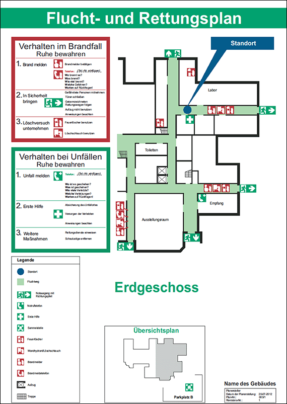

Bei größeren Baustellen ist zu prüfen, ob Flucht- und Rettungspläne erforderlich sind. Diese sind übersichtlich zu gestalten und an geeigneten Stellen auszuhängen. In angemessenen Zeiträumen sind durch Übungen die vorgesehenen Abläufe zu überprüfen.
 |